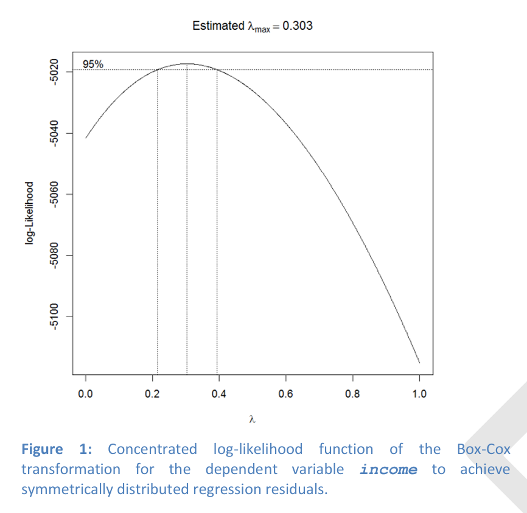
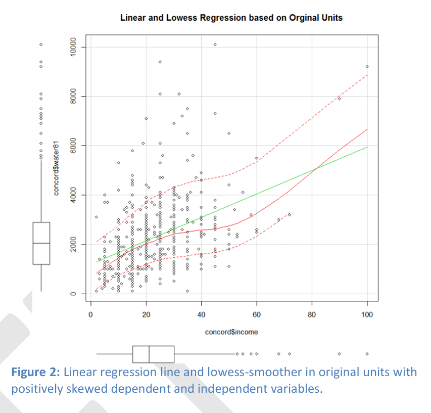
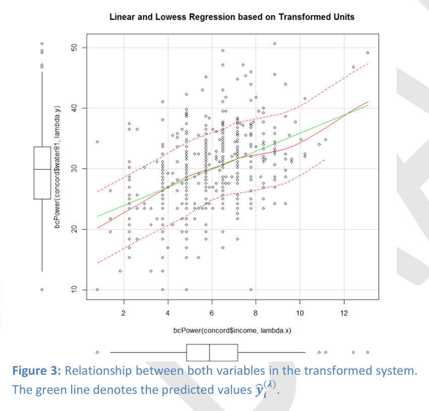
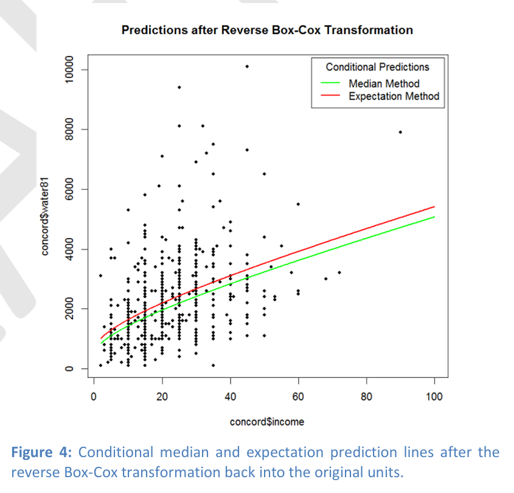
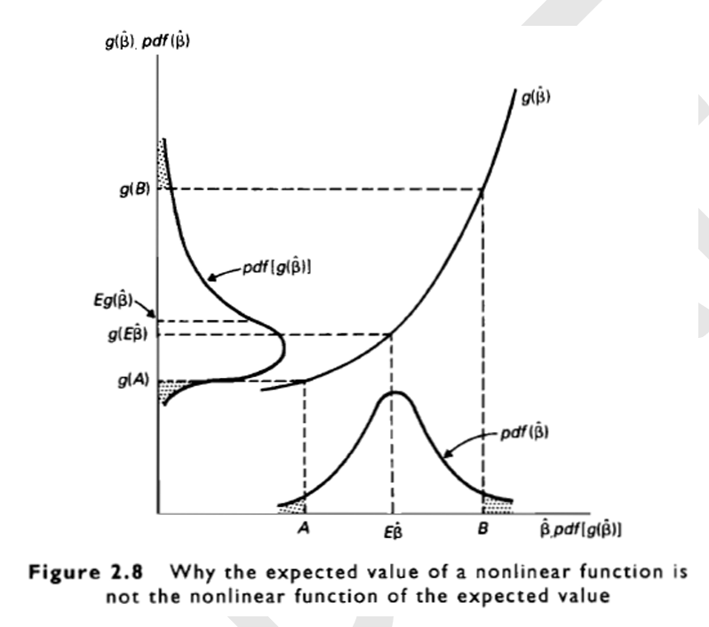

Week01: A Note on Switching between Transformed and Untransformed Regression Systems
1 Objective
The objective of this note is to discuss properties of predictions \(\hat{y}_i\) in its original measurement units when the intermediate predicted values \(\hat{y}_i^{(\lambda)} = E(y_i^{(\lambda)} | \mathbf{x}_i)\) are based on a regression model in which \(y_i\) was transformed by a Box-Cox transformation \(y_i^{(\lambda)} \leftarrow g(y_i;\lambda)\). The underlying problem is that the distributional properties of \(y_i^{(\lambda)}\) in transformed system are different from those in the untransformed system. Therefore, a direct remapping leads to predictions of conditional medians \(median(y_i | \mathbf{x}_i) \leftarrow g^{-1}(\hat{y}_i^{(\lambda)})\) in the original system rather than to a prediction of the conditional expectations \(E(y_i | \mathbf{x}_i)\).
2 Motivating Example
The R-script BoxCoxBivariateRegression.r provides an application of the boxcox() function2 from the MASS library which uses a grid search algorithm of the profile log-likelihood function (see Aitkin et al., 2009) to obtain an estimate for the best \(\hat{\lambda}\) (see Figure 1) such that the regression residuals \(e_i^{(\lambda)} = y_i^{(\lambda)} - \hat{y}_i^{(\lambda)}\) in the transformed system are approximately normal distributed. Therefore, the associated function call to evaluated the distribution of the residuals must explicitly account for the underlying regression model: findMaxLambda(lm(y~bcPower(x,lambdaX), data=myData)). Note that the independent variable has also been transformed so that its variation around its mean is approximately symmetric. The function call to identify its best transformation parameter \(\hat{\lambda}\) is findMaxLambda(lm(x~1,data=myData)).
Figure 2 displays the non-linear relationship between both variables in the original measurement system before the application of the Box-Cox transformation. Clearly, in the original system both variables are positively skewed and the residual variances increase as the independent variable increases. In the transformed system (see Figure 3) the relationship between both variables becomes almost linear as can be seen by the straight lowess smoother line, both variables are symmetrically distributed and the residual variation is now homoscedastic. Finally, in Figure 4 the prediction \(\hat{y}_i^{(\lambda)}\) was mapped back into the original units. The conditional median (green line) is lower than the conditional expectation (red line) because for any value of the independent variable, the conditional distribution of the dependent variable is positively skewed. For the bulk of the data points in the lower left-hand quadrant, lowess smoother in Figure 2 traces the conditional median in Figure 4.




3 The Box-Cox Transformation
It is required that all observations of \(y_i\) are strictly positive, that is, \(y_i > 0\) \(\forall i\). The Box-Cox transformation is defined as
\[ y_i^{(\lambda)} = g(y_i;\lambda) = \begin{cases} \frac{(y_i^{\lambda} - 1)}{\lambda} & \lambda \neq 0 \\ \ln y_i & \lambda = 0 \end{cases} . \]
Note that in the limit \(\lambda \to 0\) the Box-Cox transformation becomes \(\lim_{\lambda \to 0} \frac{y^{\lambda} - 1}{\lambda} = \ln(y)\) because, following the limit calculus rule of l’Hôpital3, \(\lim_{\lambda \to 0} \frac{y^{\lambda} - 1}{\lambda} = \lim_{\lambda \to 0} \frac{\partial(y^{\lambda} - 1)/\partial \lambda}{\partial \lambda / \partial \lambda} = \lim_{\lambda \to 0} \frac{\ln(y) \cdot y^{\lambda}}{1} = \ln(y)\).
The inverse transformation reversing the transformed values \(y_i^{(\lambda)}\) back into their original units \(y_i\) is given by
\[ y_i = g^{-1}(y_i^{(\lambda)}) = \begin{cases} (\lambda \cdot y_i^{(\lambda)} + 1)^{1/\lambda} & \lambda \neq 0 \\ \exp(y_i^{(0)}) & \lambda = 0 \end{cases} . \]
The objective of the Box-Cox transformation is to convert the distribution of the regression residuals \(e_i^{(\lambda)} = y_i^{(\lambda)} - \hat{y}_i^{(\lambda)}\)
to a symmetric and homoscedastic distribution and preferably even
to a normal distribution with \(e_i^{(\lambda)} \sim N(0, \sigma_{(\lambda)}^2)\).
This allows the robust estimation of the regression parameters \(\{\hat{\beta}_0^{(\lambda)}, \hat{\beta}_1^{(\lambda)}, \ldots, \hat{\beta}_{K-1}^{(\lambda)}\}\) in the transformed system. The predicted values of the endogenous variable in the transformed system are \(\hat{y}_i^{(\lambda)}\). These are conditional expectations \(\hat{y}_i^{(\lambda)} = E[y_i^{(\lambda)} | x_{i1}, \ldots, x_{i,K-1}] = \hat{\beta}_0^{(\lambda)} + \hat{\beta}_1^{(\lambda)} \cdot x_{i1} + \cdots + \hat{\beta}_{K-1}^{(\lambda)} \cdot x_{i,K-1}\) given the set of exogenous observations \(\{1, x_{i1}, x_{i2}, \ldots, x_{i,K-1}\}\), which may or may not be transformed themselves.
4 Review: Properties of Median and Expectation
Highly skewed distributions or distributions with outliers in one tail have a levering effect on the arithmetic mean making it potentially an invalid estimate for the central tendency of a distribution. In contrast, the median (and also the trimmed mean) is more robust because extreme observations or long tails do not “pull” the median away from the central tendency of the underlying distribution.
Recall that the mean minimizes the sum of squared deviations \(\min_{\nu} \sum_{i=1}^{n} (y_i - \nu)^2\), that is, this expression becomes minimal for \(\nu = \bar{y}\). Consequently, squaring the deviation of extreme observations exaggerates their large divergences even further. In order to mitigate these quadratic impacts and still minimize the sum of squared deviations, the mean needs to move towards the extreme observations rather than reflecting the central tendency of the underlying distribution.
In contrast, the median minimizes the sum of absolute differences \(\min_{\nu} \sum_{i=1}^{n} |y_i - \nu|\), that is, this expression become minimal for \(\nu = y_{median}\). Therefore, the impact of extreme deviations remains comparable to that of typical deviations rather than becoming exaggerated as it is the case for the arithmetic mean.
For highly skewed distributions the median has a smaller mean-square-error and is therefore a more precise measure of centrality. Only if the data are approximately normal distributed then the mean is a more efficient measure of central tendency than the median.
5 Calibration of a Regression Model in a Transformed System
Any time one or more of the conditions below affect the dependent or independent variables, a data transformation toward symmetry or preferably normality may be advisable:
An untransformed regression system may be influenced by extreme observations and/or heavy tails of any of its variables. Their impact enters the model calibration with a quadratic weight and thus gives extreme observations a large leverage.
The residuals may show a pattern of heteroscedasticity, which may be induced by asymmetric distributions of the underlying variables in the regression model.
The relationships among the untransformed variables may be non-linear and thus ordinary least squares will not perform well to capture the relationships among the endogenous variable and the set of exogenous variables.
The distribution of the regression residuals, which were obtained by a linear regression model, exhibits a high degree of skewness.
In any of these cases modeling a linear regression system in the transformed domain with all variables and regression residuals being symmetrically distributed alleviates above problems and will lead to more robust estimates.
In order to further the interpretation of the model it is advisable to reverse the transformation into the original data units after the model has been calibrated in the transformed domain. The independent variables and predicted values of the dependent variable are mapped back into their natural scales. The key question becomes how do we map the predicted values, which were obtained in the transformed regression system, back into the untransformed domain? There are two alternative approaches:
If we want to maintain the robust qualities of the transformed system then we need to express the original relationship in terms of conditional medians.
On the other hand, if we want to account for the original skewness and outliers then the conditional expectations should be used.
The subsequent sections formally develop both reverse transformations. First it is shown that for any non-linear transformation \(g^{-1}(\cdot)\) of a symmetrized variable \(y_i^{(\lambda)}\) back into its original scale \(y_i\) the expectations differ \(E[g^{-1}(y_i^{(\lambda)})] \neq g^{-1}(E[y_i^{(\lambda)}])\), where \(g^{-1}(E[y_i^{(\lambda)}])\) is in fact the expected median of \(y_i\). Then the special case with \(\lambda = 0\) will be discussed. This leads to the log-normal distribution for which the exact expectation \(E[g^{-1}(y_i^{(\lambda)})]\) can be given in analytical terms. Finally, for the general case of a power normal distribution with \(\lambda \neq 0\) the expectation \(E[g^{-1}(y_i^{(\lambda)})]\) is approximated using a Taylor series expansion.
6 Properties of Transformed Density Functions
Recall that a density function \(f(x)\) of a continuous random variable \(X\) cannot be interpreted as probability per se, only the integral \(\int_{x-h}^{x+h} f(x) \cdot dx\) of the density function measures the probability \(Pr(x - h \leq X \leq x + h)\) that \(X\) is within an interval \([x-h, x+h]\).
The figure below, taken from Kennedy (1998, p. 36), demonstrates for a non-linear transformation \(Y = g(X)\) how the density function \(f(x)\) of the original random variable \(X\) changes to the density function \(f^*(y)\) of the transformed random variable \(Y\) (note a minor misprint: the axis labels \(pdf(\hat{\beta})\) and \(pdf(g(\hat{\beta}))\) should be switched).

Assume that the probability of observing \(x\) in a very small neighborhood \(dx\) around \(x\) is \(f(x) \cdot dx\). The transformation changes this small neighborhood to \(|dy|\), which is the absolute value of the range of \(y\) corresponding to \(dx\). The absolute value is used in case the transformation is a decreasing function rather than an increasing function. We obtain therefore the equality:
\[ \begin{aligned} f(x) \cdot dx &= f^*(y) \cdot |dy| \text{ or } f^*(g(x)) \cdot |dg(x)| \\ \Rightarrow \quad f^*(y) &= f(x) \cdot \frac{dx}{|dy|} \end{aligned} \tag{1} \]
The term \(dx/|dy|\) is the Jacobian, which ensures that the probabilities \(\int_{g(x_1)}^{g(x_2)} f^*(y) \cdot dy = \int_{x_1}^{x_2} f(x) \cdot dx\) in the transformed and untransformed system are equal and that \(\int_{-\infty}^{\infty} f^*(y) \cdot dy = 1\). In order to express the density \(f^*(y)\) just in terms of the argument \(Y\) we need to make use of the inverse transformation \(x = g^{-1}(y)\). This allows rewriting the density function (1) as
\[ f^*(y) = f(g^{-1}(y)) \cdot \frac{d(g^{-1}(y))}{|dy|}, \tag{2} \]
which is expressed solely in terms of the transformed argument \(y\). In order to evaluate the Jacobian, the first derivative of the in inverse function \(d(g^{-1}(y))/|dy|\) with respect to \(y\) needs to be evaluated for each \(y\) within the support of \(f^*(y)\).
One can derive this rule easily by using the cumulative distribution function and the chain rule of differential calculus and noting that for the distribution function the equality \(F(x) = F(g(x))|_{=y}\) will hold for a positively increasing function \(g(x)\):
\[ \begin{aligned} \frac{dF(x)}{dx} &= \frac{dF(g(x))}{dx} \\ \Rightarrow f(x) &= \frac{dF(y)}{dy} \cdot \frac{dg(x)}{dx} = f(y) \cdot \frac{dy}{dx} \\ \Rightarrow f(y) &= f(x) \cdot \frac{dx}{dy} \end{aligned} \]
For negatively decreasing functions \(g(x)\) the absolute value \(|dy|\) must be used.
The implications for the quantiles and expectation are:
Quantiles of Y: The quantiles of a distribution function just shift with the transformation so that the equality \(Pr(g(X) \leq g(x)) = Pr(X \leq x)\) continues to hold. In particular, for the median \(Pr(X \leq X_{median}) = \frac{1}{2}\) we maintain the relationship \(Pr(g(X) \leq g(x_{median})) = Pr(X \leq x_{median})\).
Expectation of Y: In contrast, after the transformation \(Y = g(X)\) has been performed the true expectation \(\mu_Y = E(Y) = \int_{-\infty}^{\infty} y \cdot f(g^{-1}(y)) \cdot d(g^{-1}(y))/|dy| \cdot dy\) will not be identical to the transformed expectation of \(X\) unless the transformation \(g(\cdot)\) is a linear function.
7 Special Case: The log-normal Distribution with λ=0
The density function: For \(\lambda = 0\) the transformed variable \(y_i^{(0)} = \ln(x_i)\) with follows a normal distribution \(y_i^{(0)} \sim N(\mu_Y, \sigma_Y^2)\). Then the untransformed \(x_i = \exp(y_i^{(0)})\) variable will follow a log-normal distribution
\[ f_{ln}(x_i; \mu_Y, \sigma_Y) = \frac{1}{x_i \cdot \sigma_Y \cdot \sqrt{2 \cdot \pi}} \cdot \exp\left(-\frac{(\ln(x_i) - \mu_Y)^2}{2 \cdot \sigma_Y^2}\right) \quad \text{for all } x_i > 0. \]
The median of log-normal distribution is \(x_{median} = \exp(y_{median}) = \exp(\mu_Y)\) because the normal distribution of \(Y^{(0)}\) is symmetric. The expectation and variance of log-normal distribution, respectively, are \(E(X) = \exp(\mu_Y + \frac{1}{2} \cdot \sigma_Y^2)\) and \(Var(X) = (\exp(\sigma_Y^2) - 1) \cdot \exp(2 \cdot \mu_Y + \sigma_Y^2)\).
Expected value in the regression model: For a regression model in the log-transformed system, the predicted conditional expectation \(\hat{y}_i^{(0)}\) for each observation depends on the exogenous variables \(\hat{y}_i^{(0)} = E[y_i^{(0)} | x_{i1}, \ldots, x_{i,K-1}] = \hat{\beta}_0^{(0)} + \hat{\beta}_1^{(0)} \cdot x_{i1} + \cdots + \hat{\beta}_{K-1}^{(0)} \cdot x_{i,K-1}\). After reversing the Box-Cox transformation we get the exact predictions \(\hat{y}_i = \exp(\hat{y}_i^{(0)} + \frac{1}{2} \cdot \sigma_{e^{(0)}}^2)\) where \(\sigma_{e^{(0)}}^2\) is the variance of the regression residuals \(e^{(0)} = \hat{y}_i^{(0)} - y_i^{(0)}\) in the transformed system.
Variance heterogeneity in the regression model: The variance \(Var(\hat{y}_i) = (\exp(\sigma_{e^{(0)}}^2) - 1) \cdot \exp(2 \cdot \hat{y}_i^{(0)} + \sigma_{e^{(0)}}^2)\) also depends on the predicted values \(\hat{y}_i^{(0)}\) and, therefore, is no longer constant. Consequently, the variances of the predictions \(\hat{y}_i\) become heteroscedastic.
8 The Power Normal Distribution for Arbitrary Transformation Values λ
For any value for \(\lambda \neq 0\) with \(y_i^{(\lambda)} \sim N(\mu_{(\lambda)}, \sigma_{(\lambda)})\) we get the power normal density function of the inversely untransformed variable \(y_i\) by making use of equation (2), that is,
\[ f(y_i; \lambda, \mu_i, \sigma) \sim \frac{1}{K} \cdot \frac{1}{\sigma_{(\lambda)} \cdot \sqrt{2 \cdot \pi}} \cdot |\lambda| \cdot (y_i - 1)^{\lambda - 1} \cdot \exp\left(-\frac{1}{2 \cdot \sigma_{(\lambda)}^2} \cdot \left(\underbrace{(\lambda \cdot y_i^{(\lambda)} + 1)^{1/\lambda}}_{=\tilde{y}_i} - \mu_{(\lambda)}\right)^2\right). \]
The adjustment factor \(1/K\) is required because the power normal distribution depends on a truncated normal distribution (see Freeman and Modarres, 2006).
For a transformed Box-Cox variable \(Y^{(\lambda)}\) the median \(Y_{median}\) in the original units is simply given by \(Y_{median} = (\lambda \cdot Y_{median}^{(\lambda)} + 1)^{1/\lambda}\). However, if we are interested in the expectation and the variance of an inversely transformed Box-Cox variable \(Y^{(\lambda)}\) both statistics must be approximated through a Taylor-series expansion \(g^{-1}(x) = g^{-1}(a) + \frac{\partial g^{-1}(a)}{\partial a} \cdot (x - a) + \frac{1}{2!} \cdot \frac{\partial^2 g^{-1}(a)}{\partial^2 a} \cdot (x - a)^2 + \frac{1}{3!} \cdot \frac{\partial^3 g^{-1}(a)}{\partial^3 a} \cdot (x - a)^3 + R\) with \(R\) being the remainder approximation error. For the inverse Box-Cox transformation, the Taylor-series approximation is developed for \(g^{-1}(y_i^{(\lambda)}) = (\lambda \cdot (y_i^{(\lambda)}) + 1)^{1/\lambda}\) around \(y_i^{(\lambda)} = \mu_{(\lambda)}\) up to the second degree term:
\[ \begin{aligned} (\lambda \cdot Y^{(\lambda)} + 1)^{1/\lambda} &\approx (\lambda \cdot \mu_{(\lambda)} + 1)^{1/\lambda} + (Y^{(\lambda)} - \mu_{(\lambda)}) \cdot \frac{\partial(\lambda \cdot \mu_{(\lambda)} + 1)^{1/\lambda}}{\partial \mu_{(\lambda)}} + \frac{1}{2} \cdot (Y^{(\lambda)} - \mu_{(\lambda)})^2 \cdot \frac{\partial^2(\lambda \cdot \mu_{(\lambda)} + 1)^{1/\lambda}}{\partial^2 \mu_{(\lambda)}} \\ &\approx (\lambda \cdot \mu_{(\lambda)} + 1)^{1/\lambda} + (Y^{(\lambda)} - \mu_{(\lambda)}) \cdot (\lambda \cdot \mu_{(\lambda)} + 1)^{\frac{1}{\lambda} - 1} + \frac{1}{2} \cdot (Y^{(\lambda)} - \mu_{(\lambda)})^2 \cdot (1 - \lambda) \cdot (\lambda \cdot \mu_{(\lambda)} + 1)^{\frac{1}{\lambda} - 2} \end{aligned} \]
The moments of \((\lambda \cdot Y^{(\lambda)} + 1)^{1/\lambda}\) are difficult to calculate, but the moments on the right side of the Taylor-series approximation can be evaluated. Taking the expectation on both sides of the approximation and noting that the expectation of a constant is equal to the constant \(E[(\lambda \cdot \mu_{(\lambda)} + 1)^{1/\lambda}] = (\lambda \cdot \mu_{(\lambda)} + 1)^{1/\lambda}\) as well as that the expectation operator is distributive over a summation, that is, \(E(Y^{(\lambda)} - \mu_{(\lambda)}) = \underbrace{E(Y^{(\lambda)})}_{=\mu_{(\lambda)}} - \mu_{(\lambda)} = 0\) we yield:
\[ \begin{aligned} E(Y) &\approx \underbrace{(\lambda \cdot \mu_{(\lambda)} + 1)^{1/\lambda}}_{\text{median term}} + \underbrace{\frac{1}{2} \cdot \sigma_{(\lambda)}^2 \cdot (1 - \lambda) \cdot (\lambda \cdot \mu_{(\lambda)} + 1)^{\frac{1}{\lambda} - 2}}_{\text{expectation adjustment term}} \\ &\approx \underbrace{(\lambda \cdot \mu_{(\lambda)} + 1)^{1/\lambda}}_{\text{median term}} \cdot \underbrace{\left(1 + \frac{1}{2} \cdot \sigma_{(\lambda)}^2 \cdot \frac{(1 - \lambda)}{(\lambda \cdot \mu_{(\lambda)} + 1)^2}\right)}_{\text{expectation adjustment factor}}. \end{aligned} \]
The expectation adjustment factor highlights the difference between the median and the expectation. As expected, it is neutral when no transformation is applied, i.e., \(\lambda = 1\).
For the variance we focus just on the 1 degree term of the Taylor-series approximating because the evaluation of the variance of the second degree term becomes rather elaborated (see Tiwari and Elston, 1999). The variance of the zero degree term is zero because it is not a random variable. Since the variance of \(Var(a \cdot X) = a^2 \cdot Var(X) = a^2 \cdot \sigma^2\) we obtain:
\[ \begin{aligned} Var(Y) &\approx \sigma_{(\lambda)}^2 \cdot \left[(\lambda \cdot \mu_{(\lambda)} + 1)^{\frac{1}{\lambda} - 1}\right]^2 \\ &\approx \sigma_{(\lambda)}^2 \cdot (\lambda \cdot \mu_{(\lambda)} + 1)^{\frac{2}{\lambda} - 2} \end{aligned} \]
Substituting the predicted values \(\hat{y}_i^{(\lambda)}\) in the transformed system for \(\mu_{(\lambda)}\) and the estimated residual variance \(\sum_{i=1}^{n} (y_i^{(\lambda)} - \hat{y}_i^{(\lambda)})/(n - K)\) in the transformed system for \(\sigma_{(\lambda)}^2\), respectively, gives the approximations for \(E(\hat{y}_i)\) and \(Var(\hat{y}_i)\) in the original system.
Freeman and Modarres (2006) provide exact expectations and variances of the power normal density function for specific values of \(\lambda\) through the evaluation of Chebyshev–Hermite polynomial expressions:
| \(\lambda\) | \(E(Y)\) | \(Var(Y)\) |
|---|---|---|
| 0 | \(\exp(\mu + \frac{1}{2} \cdot \sigma^2)\) | \((\exp(\sigma^2) - 1) \cdot \exp(2 \cdot \mu + \sigma^2)\) |
| 1/4 | \((\frac{1}{4} \cdot \mu + 1)^4 + \frac{3}{8} \cdot \sigma^2 \cdot (\frac{1}{4} \cdot \mu + 1)^2 + \frac{3}{256} \cdot \sigma^4\) | \(\frac{3}{2048} \cdot \sigma^8 + \frac{3}{32} \cdot \sigma^6 \cdot (\frac{1}{4} \cdot \mu + 1)^2 + \frac{21}{32} \cdot \sigma^4 \cdot (\frac{1}{4} \cdot \mu + 1)^4 + \sigma^2 \cdot (\frac{1}{4} \cdot \mu + 1)^6\) |
| 1/3 | \((\frac{1}{3} \cdot \mu + 1)^3 + \frac{1}{3} \cdot \sigma^2 \cdot (\frac{1}{3} \cdot \mu + 1)\) | \(\frac{5}{243} \cdot \sigma^6 + \frac{4}{9} \cdot \sigma^4 \cdot (\frac{1}{3} \cdot \mu + 1)^2 + \sigma^2 \cdot (\frac{1}{3} \cdot \mu + 1)^4\) |
| 1/2 | \((\frac{1}{2} \cdot \mu + 1)^2 + \frac{1}{4} \cdot \sigma^2\) | \(\frac{1}{8} \cdot \sigma^4 + \sigma^2 \cdot (\frac{1}{2} \cdot \mu + 1)^2\) |
| 1 | \(\mu + 1\) | \(\sigma^2\) |
The parameters \(\mu\) and \(\sigma\) refer to the transformed system. Their formula needs to be evaluated individually for each value of \(\lambda\). The second degree Taylor series approximations for the expectation are identically for \(\lambda \in \{0, \frac{1}{3}, \frac{1}{2}, 1\}\) and for \(\lambda = \frac{1}{4}\) they just differ by the summand \(\frac{3}{256} \cdot \sigma^4\). However, the first degree Taylor approximation for the variance differs substantially from Freeman and Modarres’s exact moments except for \(\lambda \in \{0, 1\}\).
9 Literature Overview
The discussion above draws on the statistical derivations in
Aitkin, Francis, Hinde and Darnell (2009). Statistical Modelling in R. Oxford University Press, pp 123-126 and Kennedy, P. (1998). A Guide to Econometrics, 4th edition, MIT Press.
Continue reading Aitken et al. beyond that section for an interesting application with a twist and a distinction between the Box-Cox transformation and link functions in the context of generalized linear models.
You may also want to look at these original articles by Box and coauthors:
Box, G. E. P. and Cox, D. R. (1964). An analysis of transformations (with discussion). Journal of the Royal Statistical Society B, 26, 211–252.
Box, G.E.P. and Tidwell, P.W. (1962). Transformations of the independent variable. Technometrics, 4, 541–50
An extension of the Box-Cox transformation for not strictly positive \(y_i\) is the Yeo-Johnson family of transformations. See also the function yjPower() in the car library. For a discussion see
Yeo and Johnson (2000) A new family of power transformations to improve normality or symmetry, Biometrika, 87:954-959
A recent paper that develops the exact expectation and variance of the reverse Box-Cox transformation \(g^{-1}(\cdot)\) by Chebyshev–Hermite polynomials from the perspective of a truncated normal distribution can be found at:
Freeman, J. and Modarres R. (2006). Inverse Box–Cox: The power-normal distribution. Statistics & Probability Letters, 76, 764–772
The following paper develops the variance of a function of random variables in terms of a second degree multivariate Taylor-Series expansion and compares it to the Delta method which only uses a first degree Taylor expansion:
Tiwari, H. K. and Elston, R. C. (1999). The Approximate Variance of a Function of Random Variables. Biometrical Journal, 41, 351-357
1 These notes are only for interested students. They are not test relevant.
2 Alternatively, the function powerTransform(lm.mod) in the car library finds that λ-value, which brings the regression residuals the closest to the normal distribution.
3 The l’Hôpital (sometimes spelled l’Hôspital) rule states that \(\lim_{x \to c} \frac{f(x)}{g(x)} = \lim_{x \to c} \frac{\partial f(x)/\partial x}{\partial g(x)/\partial x}\) with \(\partial g(c)/\partial c \neq 0\). The limit of the later term is sometimes easier to evaluate.